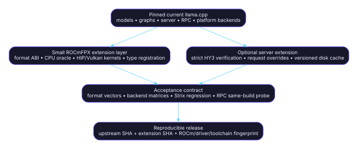

ROCmFPX technical inventory
Audit snapshot: fork
a5605a72768c6562241b248e268e33dc92787394; upstream86d86ed4396b4130922f7b9af26e3d9fc11a591b; inventory date2026-07-17.
Decision vocabulary: RETAIN = capability/ABI must survive; REFRESH = preserve capability but re-port onto current upstream; RETIRE = remove the fork patch and use upstream or archive it. S-FORK-HEAD S-UP-HEAD
Counts derive from the exact compare and PR changed-file lists; path decisions are this inventory's assessment. S-COMPARE S-PR27-FILES S-PR28 S-PR31-FILES S-PR32-FILES
Executive conclusion
ROCmFPX’s durable value is the format and backend extension layer: stable GGUF/GGML type IDs, on-disk block layouts, CPU reference implementations, HIP/ROCm and Vulkan kernels, Strix Halo tuning/validation, and a small set of server behaviors that upstream does not yet expose. Those capabilities should survive a rebase. S-QT-ENUM-FORK S-ROCMFP4-H S-ROCMFPX-H S-MMVQ S-VULKAN S-BUILD-STRIX
The largest maintenance liability is the copied general llama.cpp surface: HY3 model/graph code, private MTP APIs, generic parser/Jinja fixes, WebUI repairs, Apple packaging, and large Hexagon/OpenCL/WebGPU snapshots. Current upstream now contains HY3 with MTP and newer implementations of these shared subsystems, so the fork should replace those copies rather than continue merging them. S-UP-PR25395 S-HYV3-UP S-EXT-UP S-C-807 S-C-FF8 S-C-01D S-UP-HEAD
RPC is not a meaningful ROCmFPX-owned patch layer in the audited PR series: none of PRs #27, #31, or #32 changes ggml/src/ggml-rpc/*. The correct target is current upstream RPC plus compatibility tests for ROCmFPX tensor IDs and same-build client/server behavior. This is an inference from the exact PR file lists and the generic uint32_t tensor-type field in the RPC implementation. S-PR27-FILES S-PR31-FILES S-PR32-FILES S-RPC-FORK S-RPC-UP S-RPC-MTP-FIX S-RPC-IGPU-FIX
Recommended target architecture

The migration target is a pinned current upstream tree with a small, separately testable ROCmFPX extension series, not another whole-tree source snapshot. S-UP-HEAD S-COMPARE S-ROCMFPX-CI S-BACKEND-TEST
Preserve first
| Capability contract | Decision | Why | Primary sources |
|---|---|---|---|
| ROCmFP4/Q2/Q3/Q6/Q8/Turbo numeric type IDs and byte layouts | RETAIN | Existing GGUF files depend on these IDs and block ABIs. | S-QT-ENUM-FORK S-ROCMFP4-H S-ROCMFPX-H S-ROCMFP2-H |
| CPU reference quantize/dequantize behavior | RETAIN | It is the correctness oracle for optimized backends. | S-ROCMFP4-C S-ROCMFPX-C S-ROCMFP2-C |
| HIP/ROCm and Vulkan format kernels | REFRESH | The kernels are unique; their surrounding upstream backend code is newer. | S-MMVQ S-MMQ S-VULKAN S-UP-HEAD |
| gfx1151 Strix Halo build/tuning and real-device gates | RETAIN | AMD identifies Strix Halo as gfx1151/RDNA 3.5; fork-specific tuning is not upstream-owned. | S-BUILD-STRIX S-TUNE-FLAGS S-AMD-STRIX |
| Strict greedy HY3 verification and per-request speculative controls | RETAIN | No equivalent enabled behavior was identified in the pinned upstream server. | S-C-7D7 S-C-B56 S-SERVER-SCHEMA-UP |
| SSD prompt cache including draft/speculative state | REFRESH | Capability is fork-specific, but it must be rebuilt on current state APIs and versioned. | S-C-C81 S-SERVER-CTX S-SPEC-UP |
Replace first
| Fork patch family | Decision | Replacement | Primary sources |
|---|---|---|---|
| HY3 base model and generic MTP graph | RETIRE | Upstream PR #25395 and current src/models/hy-v3.cpp. |
S-HYV3-FORK S-UP-PR25395 S-HYV3-UP |
| Fork private MTP API | RETIRE | Current upstream llama-ext.h nextn APIs. |
S-EXT-FORK S-EXT-UP |
| HY3 split-export converter patch | RETIRE | Upstream split-export commit. | S-C-F961 S-UP-SPLIT-MTP |
| RPC implementation | RETIRE | Current upstream RPC, including MTP-context and Strix iGPU fixes. | S-RPC-UP S-RPC-MTP-FIX S-RPC-IGPU-FIX S-RPC-LIGHTNING |
| Hexagon/OpenCL/WebGPU snapshots | RETIRE | Current upstream backend trees. | S-C-807 S-PR27-FILES S-UP-HEAD |
| Generic WebUI, Jinja, formatting, and Apple packaging backports | RETIRE | Current upstream implementations. | S-C-FF8 S-C-A8C S-C-FE2 S-C-D52 S-C-01D |
Navigation
Start with Scope and baselines and the Audit report, then use the commit map, file map, and retain/refresh/retire matrix. Machine-readable ledgers are under data/.